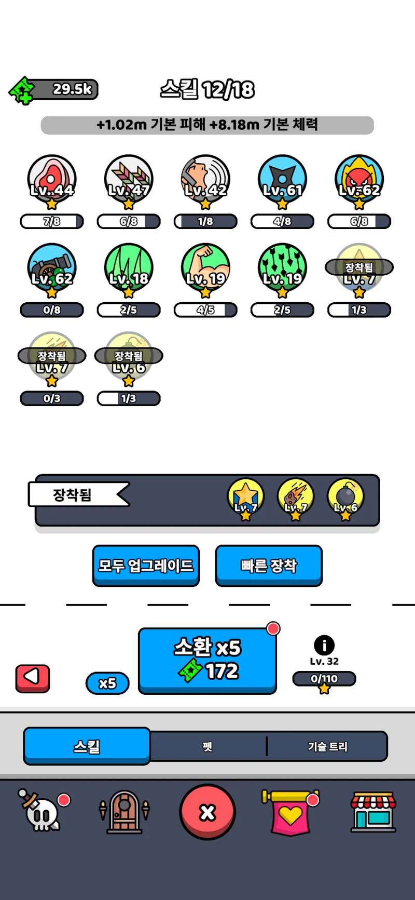
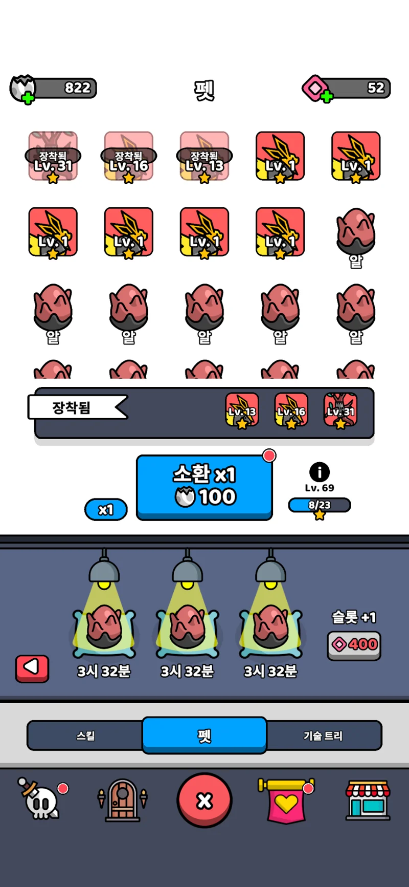
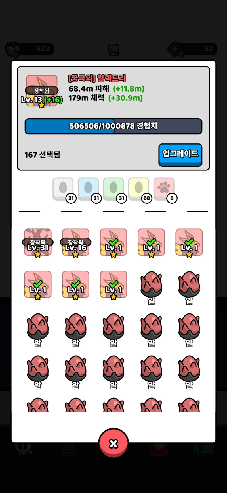
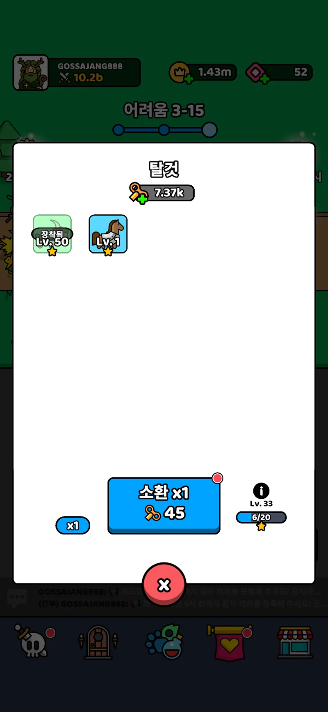
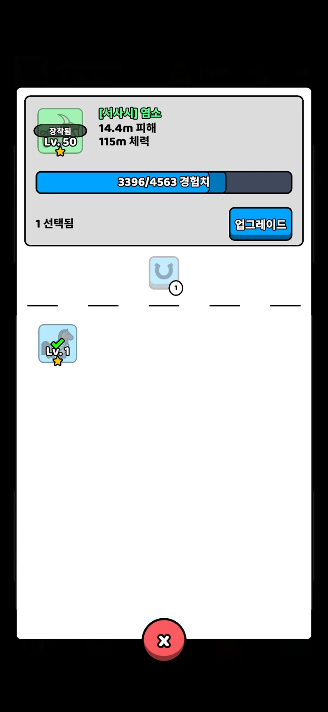
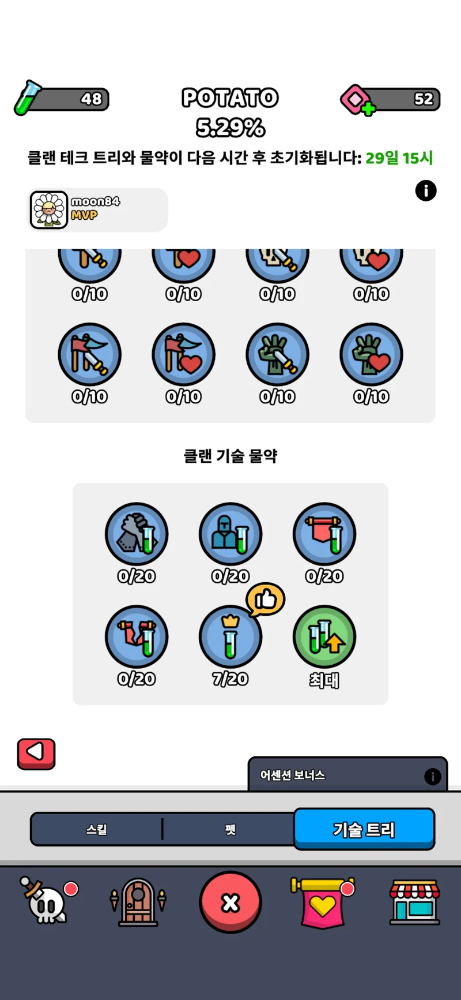

FORGE MASTER · MEMBER GUIDE · 2026.10.31
처음부터 따라 하는 재화 등록
처음 등록하는 분과 이미 티켓이 있는 분의 시작 방법이 달라요. 아래에서 자기 상황을 고르세요.
클랜 입장사진 6장 확인재화 저장티켓 보관
01처음이라면: 클랜 초대 링크로 입장클랜장이 준 초대 링크를 열고 입장 비밀번호 또는 입장 코드를 입력한 뒤 ‘클랜 현황 열기’를 누르세요. 클랜 입장 비밀번호와 개인 수정 비밀번호는 서로 달라요.
02개인 티켓이 있다면: 사진 한 장으로 입장사이트 첫 화면의 ‘개인 QR 티켓으로 들어오기’를 누르고 저장한 티켓 이미지를 선택하세요. 티켓에 연결된 클랜으로 들어가 내 재화를 불러옵니다. 클랜 입장 비밀번호가 바뀌어도 유효한 티켓으로 입장할 수 있어요.
03처음 등록: ‘내 재화 등록’에 게임 닉네임 입력이미 등록한 사람은 기존 닉네임을 그대로 사용하세요. 닉네임을 새로 만들어 등록하면 같은 사람의 기록이 두 개가 될 수 있어요. 티켓이 없는 기존 회원은 닉네임과 기존 수정 비밀번호로 로그인합니다.
04저장 방식과 사진 준비처음 네 종류를 모아 등록할 때는 ‘전체 모아서 저장’을, 일부만 수정할 때는 ‘일부 항목 저장’을 선택하세요. 소환 화면과 합성 화면은 서로 다른 사진입니다.
등록 순서: 스킬 → 알 소환 → 알 합성 → 탈것 소환 → 탈것 합성 → 녹색 물약 → 확인·저장 → 티켓 저장.
사진을 올리거나 숫자를 인식한 것만으로 서버에 저장되지는 않습니다.
FORGE MASTER · REGISTRATION GUIDE
2. 스킬 등록
‘스킬’ 탭에서 스킬 화면 사진을 올리고, 읽힌 세 값을 사진과 비교하세요.
스킬 화면

12사진을 누르면 크게 볼 수 있어요 · 새 창① 보유 수량29.5k ≈ 29,500개
② 소환 레벨32레벨
② 현재 단계0단계 (0/110)
① 보유 소환 재화
왼쪽 위 초록 소환권 옆 29.5k → 약 29,500개입니다. 소환 버튼의 172는 비용이므로 입력하지 않아요.
② 소환 레벨 · 현재 단계
정보 아이콘 아래 Lv.32 → 32레벨, 0/110 → 현재 0단계입니다. 카드의 Lv.44는 소환 레벨이 아닙니다. 110은 진행 기준이며 목표 재화량이 아닙니다.
확인 후 ‘알’ 탭으로 이동하세요.
스킬만 따로 저장하지 않고 다음 재화를 이어서 등록합니다.
FORGE MASTER · REGISTRATION GUIDE
3. 알 소환 등록
‘알’ 탭의 소환 화면 사진 칸에 펫 화면 사진을 올립니다.
알 소환 화면

12사진을 누르면 크게 볼 수 있어요 · 새 창① 보유 수량822개
② 소환 레벨69레벨
② 현재 단계8단계 (8/23)
① 보유 소환 재화
왼쪽 위 알 아이콘 옆 822 → 822개입니다. 파란 버튼의 100은 소환 비용입니다.
② 소환 레벨 · 현재 단계
정보 아이콘 아래 Lv.69 → 69레벨, 8/23 → 현재 8단계입니다. 장착된 펫의 Lv.31을 입력하지 않아요.
같은 ‘알’ 탭에서 아래 ‘합성 수량’으로 내려가세요.
다음 단계에서는 별도의 업그레이드 화면 사진을 올립니다.
FORGE MASTER · REGISTRATION GUIDE
4. 알 합성 등록
‘알’ 탭 아래 ‘합성 수량’에 업그레이드 화면 사진을 올립니다.
알 합성 화면

1사진을 누르면 크게 볼 수 있어요 · 새 창① 사진 선택 수량167개
등급별 합계31+31+31+68+6 = 167
① 사진 선택 수량
‘167 선택됨’ → 167개입니다. 등급별 31+31+31+68+6도 합계 167개입니다. 화면에 보이는 카드만 세지 않습니다.
추가 수량 (+α)
‘선택됨’에 포함되지 않은 재료만 입력하세요. 펫만 선택되어 알이 빠졌다면 빠진 알을 확인해 더합니다. 예: 167 + 빠진 3개 = 합성 170개. 빠진 재료가 없으면 추가하지 않습니다.
알 소환과 합성 값까지 확인했다면 ‘탈것’ 탭으로 이동하세요.
일반 소환 화면을 합성 사진 칸에 올리지 마세요.
FORGE MASTER · SCREENSHOT GUIDE
5. 탈것 소환 등록
‘탈것’ 탭의 소환 화면 사진 칸에 탈것 화면 사진을 올립니다.
탈것 화면

12사진을 누르면 크게 볼 수 있어요 · 새 창① 보유 수량7.37k ≈ 7,370개
② 소환 레벨33레벨
② 현재 단계6단계 (6/20)
① 태엽 옆 보유 수량
이 사진은 7.37k입니다. 파란 소환 버튼의 45는 소환 비용이므로 보유 수량으로 적지 않습니다.
② 정보 아이콘 아래
Lv.33은 소환 33레벨, 6/20은 현재 6단계입니다. 장착한 염소의 Lv.50은 소환 레벨이 아닙니다.
‘최대’가 표시되면
스킬·알·탈것의 정보 아이콘 아래 ‘최대’는 소환 100레벨로 처리하며 승천대기로 표시합니다. 100레벨 전에는 승천불가입니다.
승천 추천 재화량: 60k(60,000개) 이상.
왕관은 해당 재화가 승천대기임을 나타내요. 추천 수량은 안내 기준이며 실제 소모량을 확정한 계산값은 아닙니다.
확인 후 같은 ‘탈것’ 탭 아래 ‘합성 수량’으로 내려가세요.
FORGE MASTER · REGISTRATION GUIDE
6. 탈것 합성 등록
‘탈것’ 탭 아래 ‘합성 수량’에 업그레이드 화면 사진을 올립니다.
탈것 합성 화면

1사진을 누르면 크게 볼 수 있어요 · 새 창① 사진 선택 수량
‘1 선택됨’ → 1개입니다. 아래 등급 수량도 1개입니다. 소환 화면의 태엽 열쇠 수량과는 다른 값이에요.
추가 수량 (+α)
선택 수량에 포함되지 않은 재료가 있으면 그 수량만 추가합니다. 이미 선택된 재료는 중복해서 더하지 마세요. 합성 합계가 맞는지 확인합니다.
확인 후 ‘물약’ 탭으로 이동하세요.
FORGE MASTER · SCREENSHOT GUIDE
7. 녹색 물약 등록
‘물약’ 탭에 기술 트리 전체 화면 또는 클랜 기술 상세 화면을 올립니다. 수량만 확인하세요.
클랜 기술 상세 화면

1사진을 누르면 크게 볼 수 있어요 · 새 창녹색 시험관을 찾으세요
이 사진에서는 왼쪽 위 첫 줄, 녹색 시험관 옆 48만 등록합니다. 클랜 기술 진행도 5.29%, 기술의 7/20, 보석 52는 물약 수량이 아닙니다.
전체 기술 트리 화면도 가능
전체 화면에서는 녹색 물약이 왼쪽 위 두 번째 줄에 있을 수 있습니다. 빨간 물약 옆 숫자와 혼동하지 마세요.
소수점과 k를 함께 확인
1.14k약 1,140개
1.3k약 1,300개
3.3k약 3,300개
1.14k → 114 또는 114,000은 오류입니다. 결과가 틀리면 다시 인식하세요. 계속 틀리면 사진을 보며 해당 수량만 수기로 고친 뒤 저장합니다.
연습
이 사진의 녹색 물약은 몇 개인가요?
정답: 48개. k가 없으므로 48,000개가 아닙니다.
물약까지 확인했다면 아래 ‘한 번에 저장할 내역’으로 내려가세요.
아직 저장 버튼을 누르기 전입니다.
FORGE MASTER · MEMBER GUIDE · 2026.10.31
8. 확인하고 저장하기
01사진과 숫자를 마지막으로 대조보유 수량·소환 레벨·현재 단계와 알/탈것 합성 수량을 확인하세요. 0은 정상적인 값입니다. 1.14k는 약 1,140개, 4k는 약 4,000개예요. 합성 111개를 1개로 읽는 경우도 있으니 오류가 없어도 비교하세요.
02처음 등록은 개인 수정 비밀번호 설정사이트가 요구하는 개인 수정 비밀번호를 입력하고 확인하세요. 클랜장 비밀번호를 넣는 칸이 아닙니다. 이미 등록한 회원은 기존 수정 비밀번호를 사용하세요.
03티켓으로 로그인했다면 비밀번호 없이 저장유효한 QR 티켓으로 내 재화를 불러왔다면 그 티켓으로 저장할 수 있어요. 비밀번호 오류가 계속 보이면 새로고침 후 티켓 사진으로 다시 입장하세요.
04저장 버튼을 누르고 성공 안내 확인전체 저장은 네 종류를 모두 입력해야 합니다. 일부 수정은 ‘일부 항목 저장’을 사용하세요. 저장 성공 안내를 확인하고 ‘클랜 현황’에서 내 닉네임과 숫자를 다시 확인합니다.
빈칸은 기존 값을 지우지 않습니다. 0을 직접 입력하면 해당 수량은 0으로 수정됩니다. 사진 삭제는 수량을 지우는 기능이 아니며, 서버 사진 삭제도 저장 후 반영됩니다.
업데이트·통신 오류로 저장에 실패했다면 성공으로 간주하지 마세요. 입력 화면을 유지하고 다시 시도한 뒤 클랜 현황에서 실제 저장 여부를 확인하세요.
FORGE MASTER · MEMBER GUIDE · 2026.10.31
9. 개인 티켓 발급 · 저장 · 다시 로그인
01기존 회원은 비밀번호 로그인 후 티켓 발급이미 등록한 기록이 있다면 기존 닉네임과 수정 비밀번호로 로그인한 뒤 개인 티켓 발급 기능을 이용하세요. 새로 등록한 분도 저장을 마친 뒤 티켓 발급 안내를 따라주세요.
02‘티켓 이미지 저장’을 누르세요발급 후 ‘내 개인 티켓’에서 이미지를 저장하세요. 휴대폰에서 이미지가 열리면 길게 눌러 사진에 저장해야 할 수 있어요. 사진 앱이나 다운로드 폴더에 실제 파일이 있는지 확인한 뒤 ‘이미지를 보관했어요’를 누릅니다.
03다음에는 티켓 이미지로 입장사이트 첫 화면에서 ‘개인 QR 티켓으로 들어오기’ → 저장한 이미지 선택. 클랜 선택과 내 재화 로그인이 이어집니다. 앞면의 로또 숫자만 찍은 사진으로는 로그인할 수 없어요. QR이 포함된 저장 이미지를 사용하세요.
04다른 기기도 같은 티켓 이미지 사용티켓 이미지 파일을 새 기기에 옮겨 선택하세요. 같은 브라우저에 보관된 티켓은 클랜 화면을 열 때 개인 로그인에 사용됩니다. 브라우저 데이터 삭제·시크릿 모드·다른 앱 브라우저에서는 다시 티켓을 선택해야 할 수 있습니다.
티켓은 내 재화를 수정할 수 있는 로그인 수단입니다. 단체 톡방에 올리거나 다른 사람에게 공유하지 마세요. 티켓 재발급·비밀번호 복구로 이전 QR이 무효가 되면 새 티켓을 저장해야 합니다. 탈퇴·삭제된 회원의 티켓은 사용할 수 없습니다.
FORGE MASTER · MEMBER GUIDE · 2026.10.31
10. 이번 주 등록 확인 · 정렬 · 계산기
이번 주 등록 인원
집계 기준은 한국 시간 매주 일요일 오전 9시입니다. 이번 주에 재화를 하나라도 저장한 회원을 집계하며 부분 수정도 포함됩니다. 전체 회원 수와 이번 주 등록 인원은 다른 숫자예요. 새 주가 시작되면 현재 재화를 다시 등록하세요.
| 이름 색상 | 의미 |
|---|
| 빨간색 | 이번 주 재화 미등록 |
| 노란색 | 합성 또는 일부 재화 미입력 |
| 청록색 | 입력 완료 |
제목 옆 상태별 인원 수를 확인하고, 미등록·합성 미등록 정렬로 빠진 회원을 찾으세요. 스킬·알·탈것·물약과 알/탈것 합성은 각각 오름차순·내림차순으로 볼 수 있습니다. 합성 합계는 사진 선택 수량과 추가 수량을 더한 값입니다.
필요한 계산기만 눌러 펼치세요
내 재화에서는 개인 수량, 클랜 현황에서는 클랜 합계가 먼저 들어갑니다. 소모량·배율·1개당 점수는 본인 게임 화면과 이번 클랜전 기준에 맞게 바꾸세요.
| 계산기 | 계산 기준 |
|---|
| 스킬 소환 | ⌊티켓 ÷ 5회 뽑기 소모량⌋ × 5 × 점수 |
| 탈것 소환 | ⌊태엽 ÷ 1회 소모량⌋ × 추가 획득 배율 × 점수 |
| 알·탈것 합성 | 합성 수량 × 1개당 점수 |
소환 횟수의 소수점은 버립니다. 추가 획득 배율은 10% → 1.1, 20% → 1.2입니다. 점수는 매번 다를 수 있고, 클랜 합계에 같은 조건을 적용한 결과는 예상값입니다. 계산기를 누른 것만으로 게임 재화가 사용되지는 않아요.
FORGE MASTER · MEMBER GUIDE · 2026.10.31
11. 사진 업로드 · 인식 오류 · 복구
사진 올리기
휴대폰은 올바른 사진 칸에서 사진첩·파일을 선택하세요. PC는 해당 사진 칸을 선택하고 Ctrl+V 또는 ‘복사한 캡처 붙여넣기’를 사용하세요. JPG·PNG·WEBP, 최대 10MB를 지원합니다. 복붙이 안 되면 PNG 파일로 저장해 선택하세요.
새 사진으로 바꾸기
사진 삭제 버튼으로 기존 사진을 제거한 뒤 새 사진을 올릴 수 있습니다. 소환 사진은 소환 칸에, ‘선택됨’이 나오는 업그레이드 사진은 합성 칸에 올리세요. 사진을 누르면 크게 확인할 수 있습니다.
일반 인식과 호환 인식
일반 인식부터 시도하고 실패하거나 숫자가 다르면 같은 사진을 호환 인식으로 다시 확인하세요. 저장 없이 인식 연습에서도 시험할 수 있습니다. 틀린 값은 확인 후 수기로 고쳐 저장할 수 있어요.
오류 안내 확인
인식 문제는 자동 오류 저장 대상입니다. 전송 실패·연결 오류가 보이면 전송 성공으로 단정하지 마세요. 수량이 틀렸는데 오류가 없으면 ‘사진 속 값 → 인식된 값’을 운영자에게 알려주세요. 티켓·비밀번호는 보내지 마세요.
| 오류 | 확인할 내용 |
|---|
| IMG-01 / IMG-02 | 사진 열기·파일 형식·10MB 용량 |
| OCR-02 / OCR-03 | 숫자 위치 또는 숫자를 읽지 못함 |
| OCR-04 | 자리수·소수점·단위 불일치 |
| OCR-06 / OCR-07 | 사진 종류 또는 합성 재료 선택 상태 확인 |
| SAVE-01 | 저장 실패 — 실제 현황에서 확인 |
비밀번호·티켓을 잃어버렸다면
보관한 개인 복구 코드가 있으면 비밀번호 복구 기능을 사용하세요. 없으면 클랜장 또는 운영자에게 복구를 요청하세요. 운영자 일회성 코드는 사용 1회 또는 발급 후 10분이 지나면 무효입니다. 복구 후 티켓을 다시 발급하고 새 이미지를 저장하세요.
일반 클랜원은 구글 스크립트를 수정하거나 배포할 필요가 없습니다. 클랜장은
새 클랜 만들기 · 클랜장 관리에서 클랜을 만들고 서버·초대 정보를 관리합니다. 관리 비밀번호와 복구 코드는 회원 초대 링크와 별도로 보관하세요.